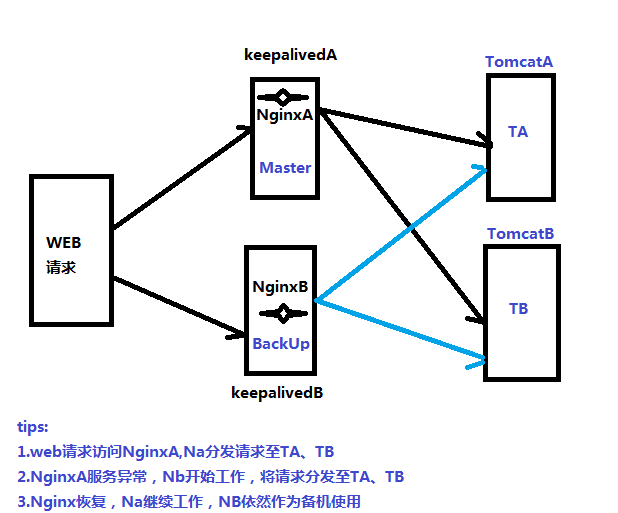
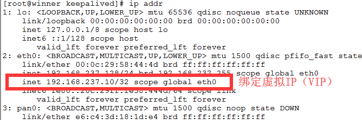
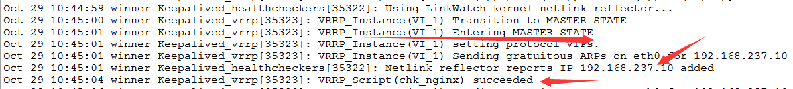
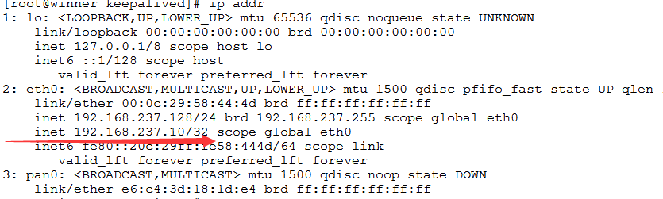
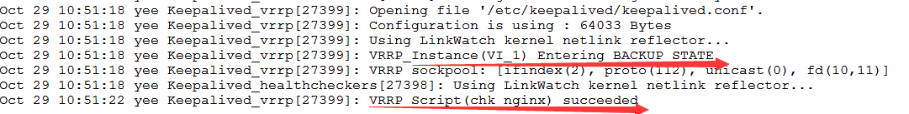
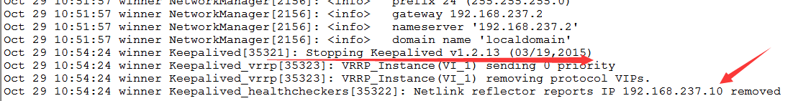
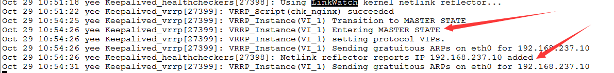
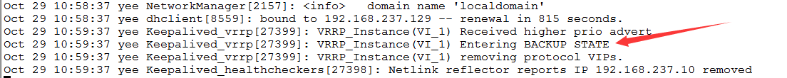
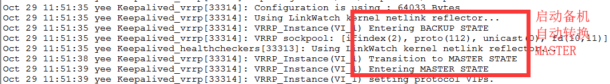

环境：centos6.7
准备：两台服务器（虚拟机）、两台应用（Tomcat）、Nginx、keepalived
server1:192.168.237.128 安装上Nginx和keepalived VIP 192.168.237.10（同网段）
server2:192.168.237.129 安装上Nginx和keepalived
安装keepalived ： yum install keepalived
keepalived 配置文件路径 /etc/keepalived/keepalived.conf
1.分别开启NginxA和NginxB ，使两台Nginx都能分发请求至TA、TB
keepalivedA配置文件
! Configuration File for keepalived
global_defs {
router_id 192.168.237.128
}
vrrp_script chk_nginx {
script "/operation/nginx_check.sh"
interval 5
weight -5
}
vrrp_instance VI_1 {
state MASTER
interface eth0
virtual_router_id 51
priority 110
authentication {
auth_type PASS
auth_pass 1111
}
virtual_ipaddress {
192.168.237.10
}
track_script {
chk_nginx
}
}
启动keepalivedA : service keepalived start;启动成功keepalivedA后查看 ip addr keepalived日志路径 /var/log/messages

keepalivedB文件配置
! Configuration File for keepalived
global_defs {
router_id 192.168.237.129
}
vrrp_script chk_nginx {
script "/operation/nginx_check.sh"
interval 5
weight -5
}
vrrp_instance VI_1 {
state BACKUP #备机
interface eth0
virtual_router_id 51
priority 100 #优先级 小于主机
authentication {
auth_type PASS
auth_pass 1111
}
virtual_ipaddress {
192.168.237.10
}
track_script {
chk_nginx
}
}
检测Shell脚本 nginx_check.sh
#!/bin/bash
A=`ps -C nginx –no-header |wc -l`
if [ $A -eq 0 ];then
/usr/local/nginx/sbin/nginx
sleep 2
if [ `ps -C nginx --no-header |wc -l` -eq 0 ];then
killall keepalived
fi
fi
启动keepalivedA：根据日志可知，配置生效 检测脚本已生效


启动keepalivedB：根据日志可知，配置生效 检测脚本已生效

停止主机MASTER的nginxA，根据监控日志可知keepalivedA已停止，KA绑定的VIP自动移除；备机自动转换为MAster，绑定VIP，接替主机正常工作


重新启动NA和KA，NA重新恢复工作，充当MASTER，NB则转换为备机

至此，Nginx+keepalived的主从高可用配置已经演示完成。
总结 <<<<<<<<<<配置过程遇到的问题以及解决方案>>>>>>>>>>>
问题1：Process [42305] didn't respond to SIGTERM 启动keepalived出现此报错 解决方案 ：interval 5 调整检测脚本间隔时间 -----相应调大
问题2：
解决方案 ： 关闭防火墙 service iptables stop
问题3：一般防火墙是开启的，如何解决问题二？
解决方案：防火墙设置开放VRRP协议
vim /etc/sysconfig/iptables
-A INPUT -i eth0 -d 224.0.0.0/8 -p vrrp -j ACCEPT
-A OUTPUT -o eth0 -d 224.0.0.0/8 -p vrrp -j ACCEPT
问题4：运行检测脚本报错 /bin/bash^M: bad interpreter 解决方案：检测脚本更改为linux环境编码